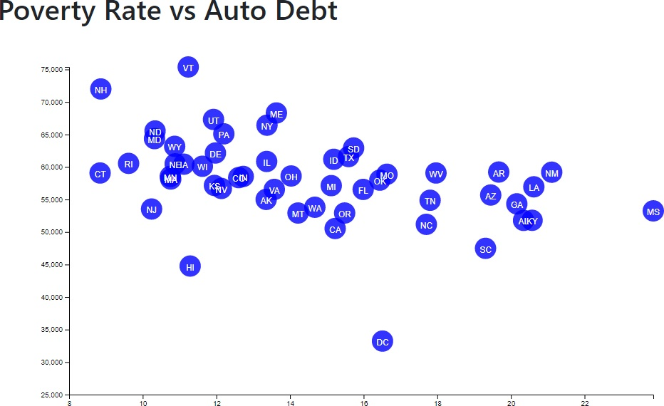
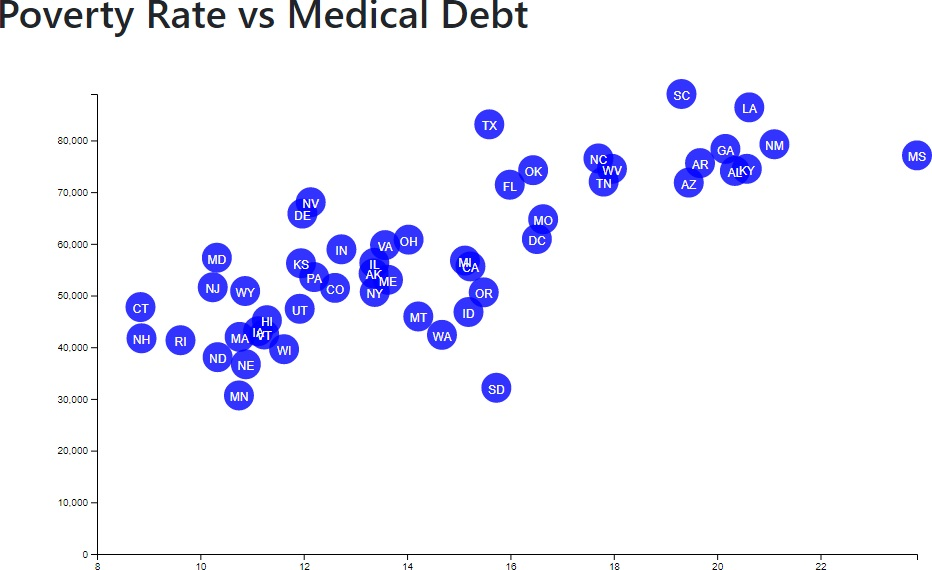
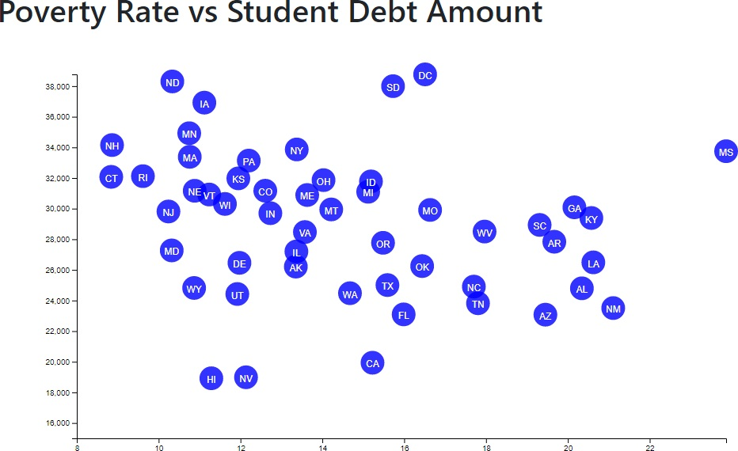
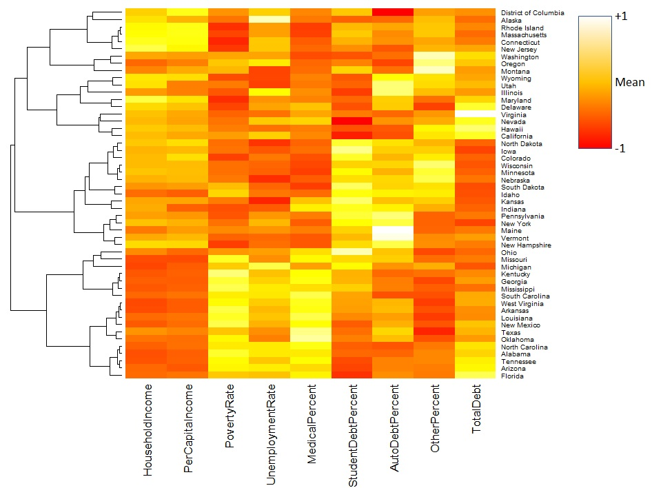

2017 Correlations to Population?
Average poverty rate by county/state does not have a noticeble trend up or down to overall state population. However, as the poulation increases, we may be seeing some convergence to a median value.
District of Columbia:
The District of Columbia is not a state, and compared to the states, appears to be a unique outlier. Perhaps the data would be better captured as part of Maryland.
D.C. Notes:
- One of the highest per capita incomes
- One of the highest unemployment rates
- High student debt rate (21% student debt)
- Midrange medical debt (33%)
- Auto debt rate is low. Is auto ownership low in the area? A study of auto debt rates to availability of public transportation options might be interesting.
Debt to Income:
Auto debt and student debt do not appear to correlate to household income. Medical debt appears to trend down as household income increases. Further investigation into medical insurance coverage might shed more light on this statistic.
Distribution of Debt Against Income
The scatter plot above compares the median income with a calculated multiple of total debt over median income by county. As we can see as median income rises the multiple of total debt over median income decreases. This means median income rises faster than debt as people make more money. This makes sense since people will have more money to pay for things compared to using debt. The top 10 most indebted states are Arizona, Alabama, North Carolina, Florida, Tennessee, Hawaii, New Mexico, South Carolina, Nevada, and West Virginia.
Poverty and Unemployment Distribution Across the United States
Defining Poverty
The data we used for this choropleth was taken from the United States Census Bureau distributed in 2017. The census “uses a set of money income thresholds that vary by family size and composition to determine who is in poverty. If a family's total income is less than the family's threshold, then that family and every individual in it is considered in poverty. The official poverty thresholds do not vary geographically, but they are updated for inflation using the Consumer Price Index (CPI-U).” (USCB-“Poverty”)
Observations
There are definite bands of poverty distribution displayed in this visualization. Southern states appear to have higher poverty distribution than the northern states. Northern “Midwestern states” and areas along the eastern seaboard have relatively low poverty rates. With regards to the “physical outliers”, Puerto Rico has uniform poverty distribution (high) , while Alaska and Hawaii have a mixed distribution.
Unemployment seems more evenly dispersed, although the northern Midwest again shows a trend toward lower percentages. The eastern seaboard areas that had decreased poverty rates have average unemployment rates.
Questions Raised and Future Analysis Ideas
How do these maps change annually? Are there drastic changes or are there subtle changes per year?
Why do the southern states have such high poverty/unemployment rates?
How would the median household income per county look on a choropleth?
The Cost of Poverty



In all of the charts above, debt is measured in 2017 United States Dollars (USD) along the Y-Axis and Percent Poverty along the X-Axis.
Disadvantages of Poverty
Debt for Automobiles/Vehicles
An explanation for why auto debt is not going higher can be due to ineligiblity, the individuals are not qualifed to be given cars or auto loans to be in debt or unaffordability, individuals are not choosing to buy or get in debt for a new or slightly used car when it is possibe to buy an older one.
Debt for Medical Bills
Medical billing increases with poverty likely because there is no alternative to common illnesses or due to poor health conditions, expensive medical procedures that further increase an indivdual's debt.
Debt for Education/Student Loans
No apparent relationship. A reason why student debt might not correlate with higher rates of poverty is because there's alternatives to traditional education, for example on the job and vocational making for a less expensive education and that repayment can be structured over many years.
Elucidating Trends in Large Amounts of Data

Clusters of Data
The datasets used in this investigation of economic inequality were by and far, large. By using statistical analsis, the following data were found to be most relevant for comparison at the state level. Income, rates, and debt. Furthermore, using correlational analysis grouped US states according to their similarities across the board of data. When pairing this data to the heatmap above several prominent trends become visualized. Below are pertinent findings.
Observations
There is a strong relationship between the median household income and their respective state's capital income.
The percentage of poverty, unemployment, and medical debt also share a strong relationship.
Not only do states with higher incomes have lower rates of poverty they are directly contrasted with states of moderate income and the highest and worst rates of poverty.
The most impoverished states in the US share geographical boundaries and by extension historical bonds in the South and mid-Southwest regions.
The other types of debt collected (student, auto, and other) form a broad band across the rest of the US and are higher in states with greater economic standings